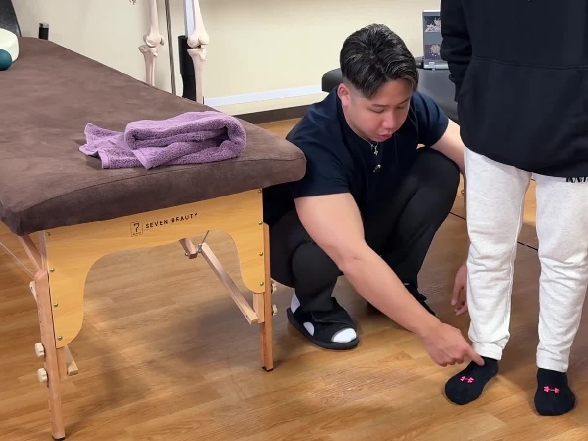
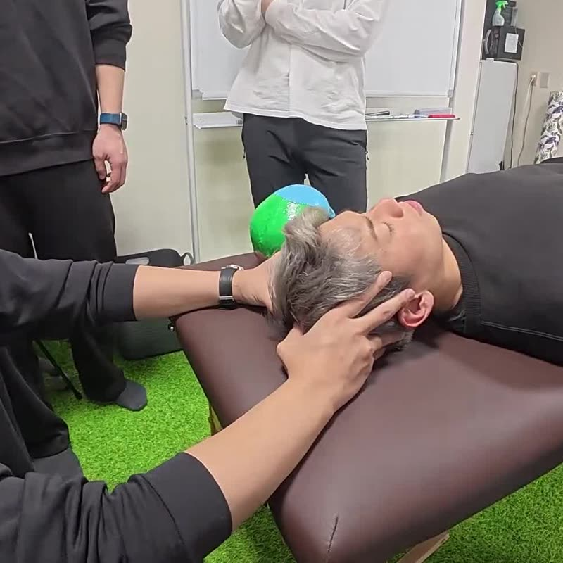

零式-ハンドベースコンディショニング
手を「脳に情報を送るセンサー」と「身体を支える土台」の両面から捉える入門講座。1日で、実技が約8割。
- 対象
- トレーナー・セラピストなど身体に関わる専門職
- 形式
- 対面＋オンライン・1日
- 受講条件
- 受講条件なし
- 開催予定
- 2027年1月16日（土）東京
Courses
創設者が開発してきた「零式」の12講座です。
2027年の年間セミナーとして開催が予定されています。
掲載の日程はすべて予定です。料金・会場・定員・受付状況は、各講座の詳細ページ（零式 2027 年間セミナーのサイト）でご確認ください。分野の分類はサイト内で探しやすくするためのもので、資格の区分ではありません。
分野で絞り込む
全12講座を表示しています
手を「脳に情報を送るセンサー」と「身体を支える土台」の両面から捉える入門講座。1日で、実技が約8割。

零式の中心となる講座。耳・顎・顔・頭皮・首の後ろまでのヘッドコンディショニングを2日間で練習します。

足を「身体の土台」と「床からの情報の入り口」の両面から捉える入門講座。1日で、実技が約8割。

姿勢を感覚を統合した結果（出力）として捉え、7ステップの評価から運動までを2日間で練習します。

2〜3秒の短いストレッチと、経絡の流れに沿った全身のストレッチを2日間で学びます。

ボディメイクを求めるお客様に、施術で応えるための考え方と技術を学びます。

施術ではなく、運動からトレーニングへつなぐ設計を学ぶ合宿形式の講座。2027年は高知で開催予定です。

内臓・神経・ホルモン・感情のつながりを整理し、腹診・舌診・脈診などを用いた評価を学びます。

零式-関節調整法の基礎編。評価と基本技術を学び、ADVANCEへ進むための講座です。

BASICで学んだ評価と基本技術を、より実践的な調整へ広げる応用編です。

女性ホルモンの変化が身体に与える影響を理解し、40〜70代の女性のお客様を評価する視点を1日で学びます。

全身の疲労を評価し、零式の技術を組み合わせて一つの施術として設計する、集大成の講座です。
該当する講座がありません。
How to apply
各講座の受付開始は、零式セミナーの公式LINEでお知らせしています。日程に変更がある場合も同じくLINEでご案内されます。